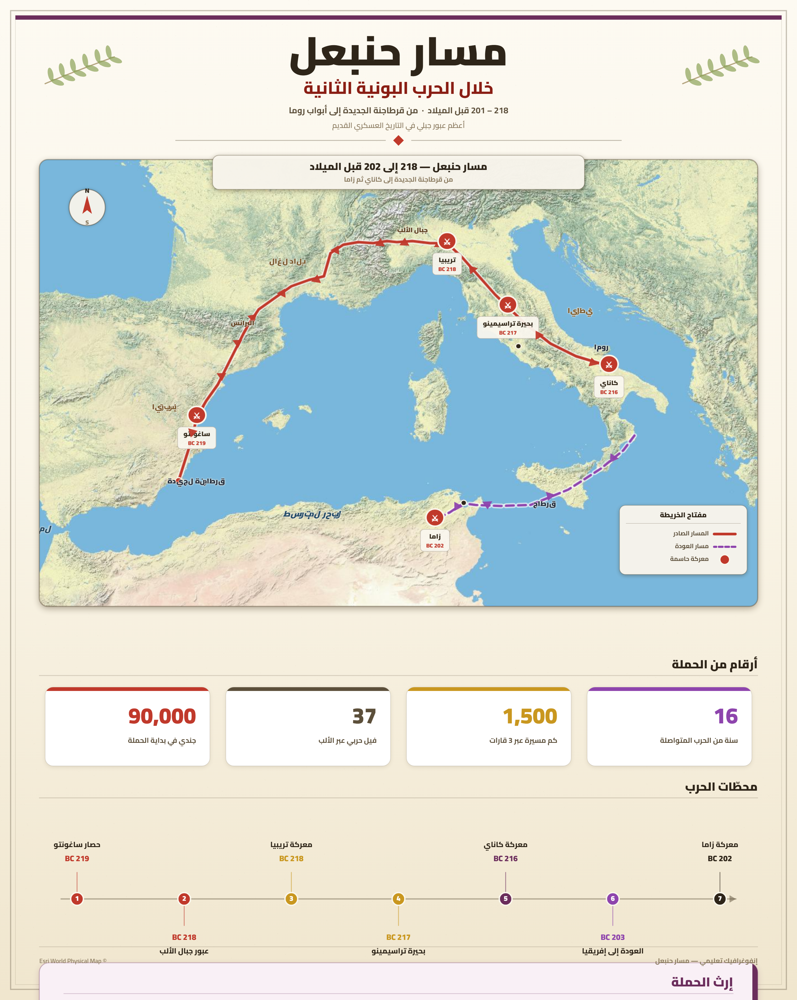
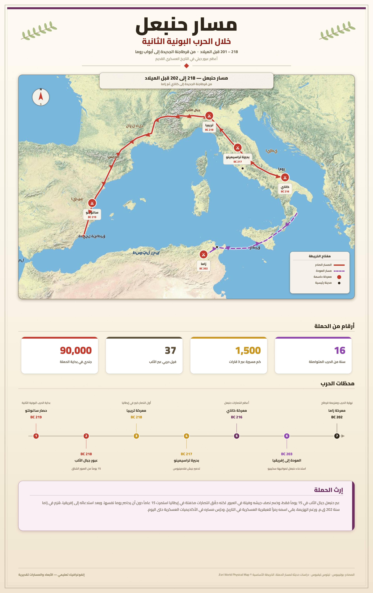

تمارين – قرطاج: عبقرية حنبعل
- الحروب البونية:
- سلسلة من ثلاث حروب بين قرطاج وروما، انطلقت سنة 264 ق.م وانتهت سنة 146 ق.م بسقوط قرطاج. خاضت قرطاج خلال هذه الفترة ثلاث حروب، تُعتبر الحرب الثانية التي قادها حنبعل أهمّها، إذ تمكن بفضل عبقريته من تهديد روما في عقر دارها.
- الحرب البونية الثانية:
- الحرب التي قادها حنبعل منذ 218 ق.م، وهاجم فيها روما في عقر دارها بعد انطلاقه من مقاطعة إيبريا واجتيازه جبال البيريني والألب. خاض فيها معارك تراسيمانوس وقانّة وانتصر فيها، وانتهت بهزيمة قرطاج في معركة زاما سنة 202 ق.م (أو 201 ق.م).
- معركة قانّة:
- من أشهر المعارك التي خاضتها قرطاج ضد روما خلال الحرب البونية الثانية. اعتمد فيها حنبعل استراتيجية القوس والتطويق، وحقّق فيها انتصاراً سريعاً ألحق بالجيش الروماني هزيمة مذلّة حطّمت كبرياءه وأسطورة الجيش الروماني الذي لا يُقهر.
- استراتيجية القوس والتطويق:
- الخطة التي اعتمدها حنبعل في معركة قانّة، وتقوم على تنظيم الجيش في شكل قوس محدّد في اتجاه الجيش الروماني الذي كان أكثر عدداً، للإيهام بضعف النقطة الأمامية حتى يركّزوا عليها هجومهم، ثم بتقدّم الرومان يتراجع القوس ليصبح شيئاً فشيئاً منفرجاً ليتم تطويق الجيش الروماني بشكل كلّي من كل الاتجاهات ومباغتته بشكل مفاجئ.


انطلقت الجيوش القرطاجية بقيادة حنبعل من مقاطعة إيبريا في ربيع 218 ق.م متجهة إلى روما، بعد أن هاجم مدينة ساغنتم فأعلنت روما الحرب على قرطاج لخرقها معاهدة 241 ق.م. اجتاز حنبعل بقواته (التي تألفت حسب بعض المصادر من جندي وعدد من الفيلة) جبال «البيريني» وجبال «الألب»، وتمكّن في طريقه من استمالة عدد كبير من قبائل بلاد الغال في فرنسا. دخل حنبعل الأراضي الرومانية بعد أن فقد عدداً كبيراً من جنده، لكنه استطاع عزل الرومان بعقد صفقات مع حلفائهم وتحييدهم. اتبع مسلكاً برياً طويلاً وصعباً لأنه كان يدرك ألّا أمل له في مواجهة الأسطول البحري الروماني. خاض ضد روما عدة معارك في المجال الإيطالي وانتصر فيها، منها معركتا تراسيمانوس وقانّة. وبعد هجوم الأسطول الروماني على قرطاج، عاد حنبعل وارسي بما تبقّى من جند في ليتيس، والتقى بالجيش الروماني في معركة زاما سنة 202 ق.م والتي انتهت بانتصار روما.
| المحطة | الترتيب الزمني |
|---|---|
| مهاجمة ساغنتم | 1 |
| اجتياز الألب | 2 |
| معركة تراسيمانوس | 3 |
| معركة قانّة | 4 |
| معركة زاما | 5 |
المصدر: المصادر التاريخية حول الحرب البونية الثانية
- مقدمة: تقديم حنبعل كأحد أعظم القادة العسكريين في التاريخ القديم.
- تطوير: أولاً. نشأته وتكوينه وخصاله؛ ثانياً. مظاهر عبقريته خلال الحرب البونية الثانية (اجتياز الألب، تراسيمانوس، قانّة).
- خاتمة: حصيلة إنجازاته وأثر هزيمة زاما.
مقدمة
يُعدّ حنبعل من أعظم القادة العسكريين في التاريخ القديم، إذ تمكن بفضل عبقريته خلال الحرب البونية الثانية من تهديد روما في عقر دارها، رغم قلة عدد جنده مقارنة بالرومان.
تطوير
أولاً. نشأته وتكوينه وخصاله
وُلد حنبعل بقرطاج سنة 247 ق.م، وهو الابن الأكبر لعبد ملقرت من العائلة البرقية. اصطحبه والده وهو في سنّ العاشرة إلى بلاد الإيبيريا، وتلقّى تربية عسكرية مكثّفة أهلته لقيادة الجيوش. حظي بثقافة واسعة على الطريقة الهلنسية، إذ كان يتقن عدّة لغات، وكان شديد الإعجاب بالإسكندر الأكبر حتى اعتبره البعض «إسكندر عصره». كان قائداً عسكرياً بارعاً بقدر ما هو رجل سياسة ودبلوماسي محنّك، شجاعاً ذكياً ملكاً بمختلف قواته، يتواجد دائماً في الصفوف الأمامية عند الحروب. تميّز بدهائه وتفنّنه في إعداد الخطط العسكرية.
ثانياً. مظاهر عبقريته خلال الحرب البونية الثانية
انطلقت الجيوش القرطاجية بقيادة حنبعل من مقاطعة إيبريا في ربيع 218 ق.م، واجتاز بقواته جبال البيريني والألب، وتمكّن من استمالة قبائل بلاد الغال. اتبع مسلكاً برياً طويلاً وصعباً لأنه كان يدرك ألّا أمل له في مواجهة الأسطول البحري الروماني. برزت عبقريته في معركة تراسيمانوس حيث استغل المعطيات الطبوغرافية (البحيرة، المرتفعات، المضيق) والظروف المناخية (الضباب) لتحقيق انتصار باهر. كما أبدع في معركة قانّة باستراتيجية القوس والتطويق، محقّقاً انتصاراً سريعاً حطّم أسطورة الجيش الروماني الذي لا يُقهر.
خاتمة
حقّق حنبعل خلال الحرب البونية الثانية عدّة انتصارات برهنت على عبقريته، لكن رغم الانتصارات التي حقّقها فإن هزيمة قرطاج في معركة زامة سنة 202 ق.م ستمهّد الطريق أمام روما لتهيمن على المنطقة تدريجياً.
الخط الزمني: 264 ق.م: انطلاق الحروب البونية ... 247 ق.م: ولادة حنبعل ... 218 ق.م: انطلاق الحرب البونية الثانية ... 202 ق.م: معركة زاما.